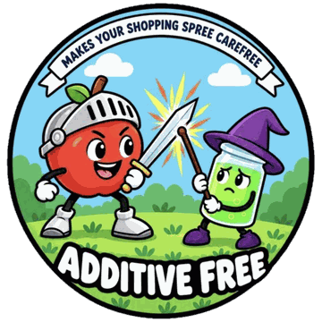

A free, open food database built by volunteers and run by a non-profit, like Wikipedia for food labels.
Anyone can add products, so a few may be missing. Visit ↗
Each additive gets one risk level, based only on trusted agencies and studies.
| Level | When | Pts |
|---|---|---|
| High | Known or probable cancer cause (IARC 1/2A), EFSA withdrew approval, or banned by the EU, FDA or a US state | −30 |
| Moderate | Possible cancer cause (IARC 2B), EFSA data gaps or lowered limit, Prop 65 listed, or a "Southampton six" dye | −15 |
| Low | A credible warning sign short of Moderate | −6 |
| None | Clean EFSA and FDA status | 0 |
| Not rated | No rating yet, so no penalty | 0 |
| A | B | C | D | E |
| 90 | 75 | 55 | 35 | 15 |
No Nutri-Score? We use the NOVA processing group instead: 1 → 90 · 2 → 70 · 3 → 50 · 4 → 25.
Each additive counts once. The most taken away is 40, and the score never drops below 0.
Nutri-Score C (55) with three Moderate dyes (−45, capped at −40) = 15.
Tap the i next to any score to see how it was worked out.
If a product scores below 90, we look for similar products that score higher.
Open Food Facts lists each product's categories from broad to specific:
| Product | Broad → specific |
|---|---|
| Nutella | Breakfasts → Spreads → Sweet spreads → Hazelnut spreads → Chocolate spreads → Cocoa and hazelnuts spreads |
| Coca-Cola | Beverages → Non-alcoholic beverages → Carbonated drinks → Soft drinks → Sodas → Colas |
So for Coca-Cola, you get another cola, not orange juice. Tap any alternative to see its full score.